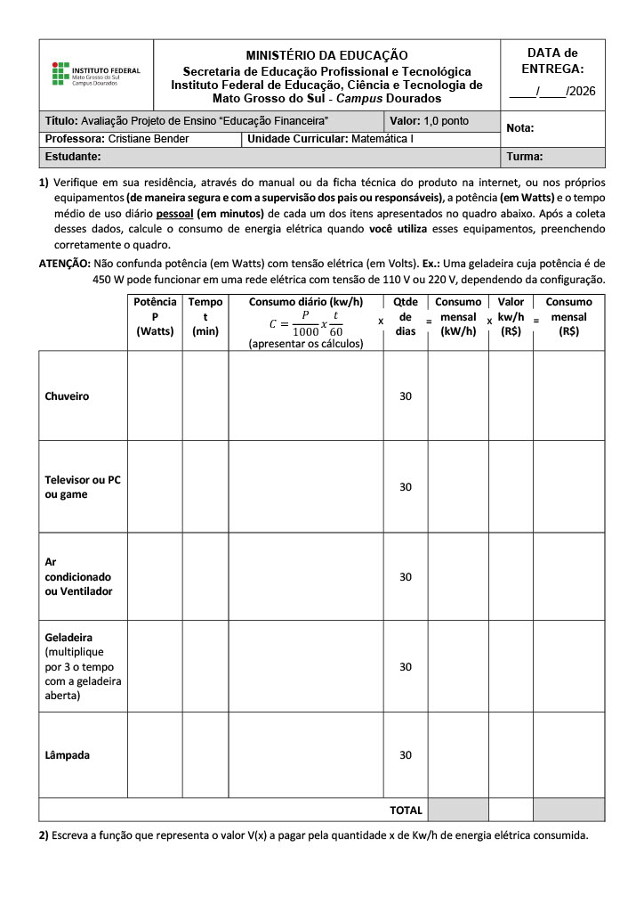

Durante a aula de matematica fizemos uma atividade para entender o quanto gastamos no dia-a-dia de energia e quanto que isso custa.

Mas como fazer este exercicio?
Primeiramente é necessario questionar o quanto tempo em media você gasta em cada um dos itens, alem de achar os Watts/Potência, a potência pode ser encontrada no adesivo que vem com todos os eletronicos.
O proximo passo é usar a formula "C=(P/1000)x(t/60)" com isso você tem o seu consumo mensal de Watts.
Por fim multiplique o seu consumo mensal de Watts pelo valor de kilowatts por hora e simples assim você tem o seu gasto mensal de energia traduzido em preço.